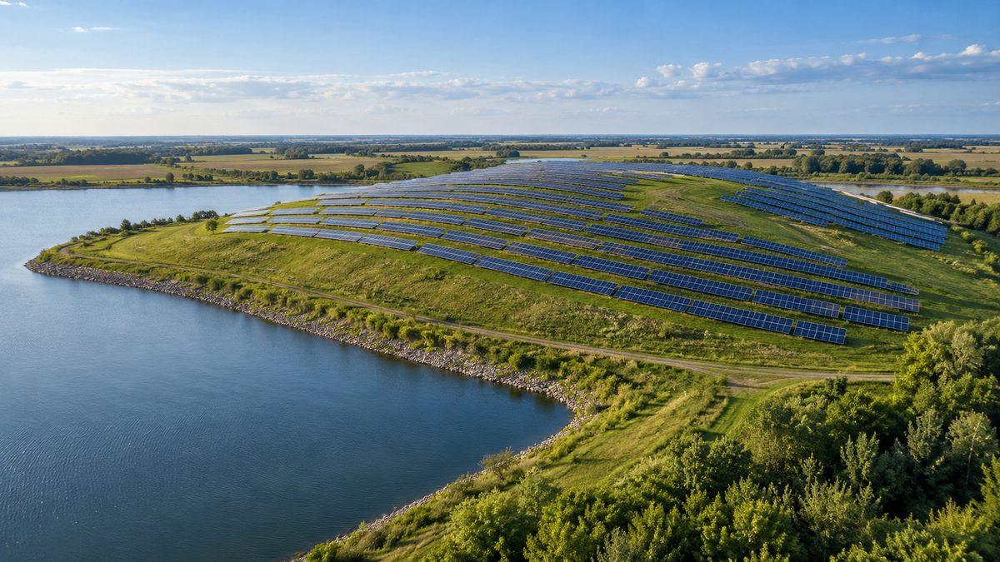
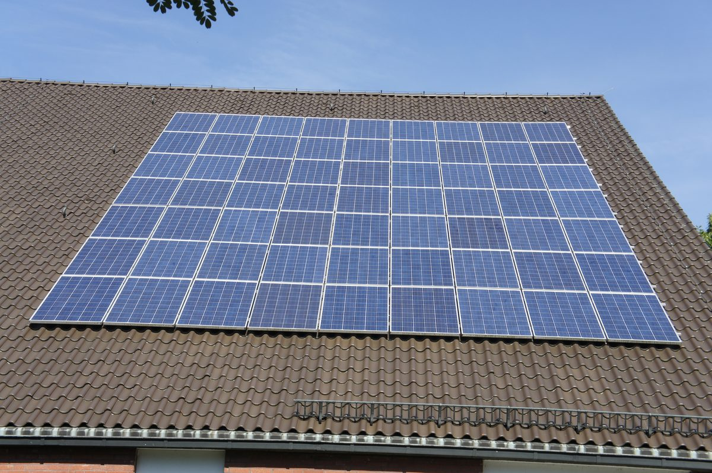
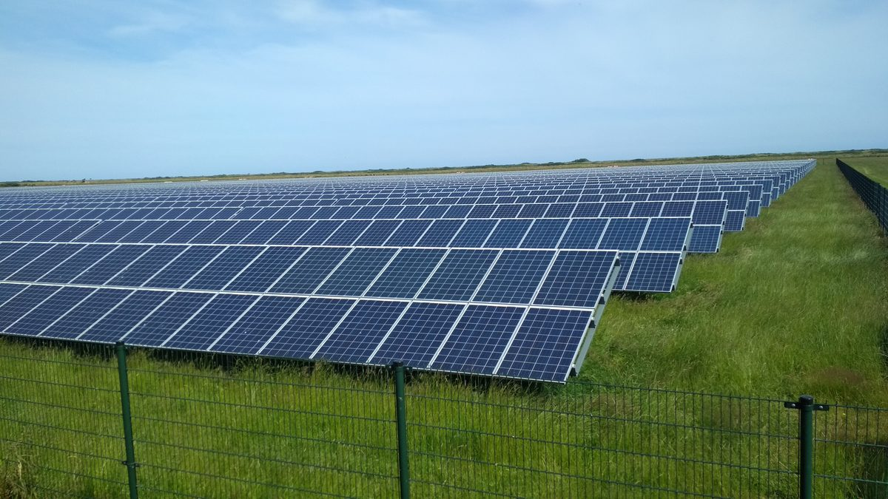

해외
미국 오하이오 도시들, 매립지·저수지·교회 지붕 태양광으로 전기요금 오름세에 대응
1년 새 주택용 요금 12% 상승…신시내티 매립지 10MW 착공, 라이마 저수지 수상태양광 2MW 가동

독일, 극우 AfD 지지 높은 지역일수록 지붕 태양광·전기차 보급 느려
프라이부르크대 연구진, 지자체 1만700여 곳 분석…AfD 성향 지역 지붕 태양광 보급률 녹색당 성향보다 31% 낮아

네덜란드 노르트브라반트주, 대형 태양광·풍력 개발사에 '지역 소유 50%' 노력 입증 의무화
태양광 50MW·풍력 15MW 이상 대상…못 미치면 이유 설명해야, 벌금은 없지만 주가 시정 요구 가능

海外
ドイツ、極右AfDの支持が高い地域ほど屋根置き太陽光・電気自動車の普及が遅い
フライブルク大学の研究チームが自治体1万700余りを分析…AfD寄りの地域の屋根置き太陽光の普及率は緑の党寄りより31%低い
オランダ北ブラバント州、大規模太陽光・風力の開発事業者に「地域所有50％」の努力の証明を義務づけ
太陽光50MW・風力15MW以上が対象…届かなければ理由の説明が必要、罰金はないが州が是正を求めることも
World
Pembrokeshire community wind turbine adds 10,000 pounds to local carbon-cutting grants
National park's Sustainable Development Fund opens new round closing December 3, funding only capital costs of community-led projects
Ohio cities turn to solar on landfills, reservoirs and church roofs as power bills climb
Residential rates up 12% in a year; Cincinnati breaks ground on 10MW landfill array, Lima starts 2MW floating solar on reservoir
Rooftop solar and EV uptake slower in German regions with high far-right AfD support
University of Freiburg team analyzes some 10,700 municipalities; rooftop solar rate in AfD-leaning areas 31% below Green-leaning ones
Dutch province of North Brabant requires large solar and wind developers to prove efforts toward 50% local ownership
Applies to solar parks of 50 MW and wind parks of 15 MW or more; developers falling short must explain why, and while there is no fine the province can order corrections
U.S. community solar: only New York, New Jersey and Oregon kept growing steadily
Top 10 states hold 91% of cumulative capacity; Maine development plunged after net metering cuts
Germany launches citizen energy sharing over the public grid; citizen energy groups call for fixes
In force from June 1, 2026, but direct supply to members judged complex and uneconomic
European auditors say EU citizen energy goals are out of reach
Only 27% of municipalities over 10,000 people have an energy community; unclear legal definitions and grid congestion stand in the way
UK plans up to 1 billion pounds for community-owned clean energy
Aim to back more than 1,000 community projects by 2030; industry voices concern over mandatory co-ownership
Japan to end support for new megasolar projects from fiscal 2027 and tighten rules
Ministerial meeting adopts measures, introducing third-party safety checks before construction and considering revision of the species conservation law
Danish think tank head argues in op-ed that residents oppose how gains are shared, not energy itself
Only 12 new onshore wind turbines in 2024; municipalities urged to put local co-ownership first